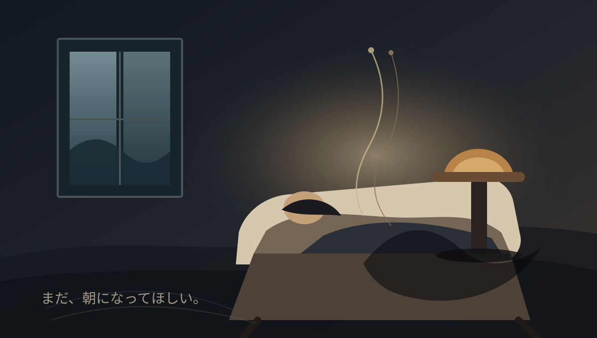

最後に、怖い
手が震えている。文字を打つだけで息が上がる。医者は穏やかな言い方をしてくれたけれど、僕にはもう時間がほとんど残っていないことがわかる。
怖い。正直に書くと、怖い。眠るように終わるのだとしても、その眠りから二度と戻らないことが怖い。明日の朝の光も、台所の水の音も、誰かが廊下を歩く足音も、自分のものではなくなる。
30歳のころ、死ぬまで日記を書くと決めた。大げさなつもりはなかった。ただ普通の日を残したかった。いま読み返すと、コンビニの棚やぬるいコーヒーのことまで残っていて、そういうものが僕の人生だったのだと思う。
まだ終わりたくない。もう少しだけ、朝になってほしい。でも、ここまで来た。怖いまま、目を閉じる。

最後の夜に残った、静かな恐怖。
病院の帰りに桜を見た
検査の帰り道、川沿いの桜がまだ少し残っていた。花びらはほとんど散って、枝の先に葉が出ている。昔なら見ごろを過ぎたと思ったはずなのに、今日はその残り方が妙にありがたかった。
体のことを考える時間が増えた。若いころは、体はただ自分を運んでくれるものだった。いまは毎朝、動いてくれていることを確認するところから一日が始まる。
定年後の平日
朝の電車に乗らなくなってから、平日の音が変わった。ベランダで洗濯物を干していると、遠くで学校のチャイムが鳴る。自分の生活が社会の中心から少し横にずれた感じがする。
寂しいかと聞かれたら、少し寂しい。でも、昼に味噌汁を温め直してゆっくり飲めることも悪くない。時間が余るのではなく、時間の輪郭が見えるようになった。
年越しそばを半分残した
年越しそばを作ったが、半分で腹がいっぱいになった。若いころは大盛りを食べても足りなかったのに、こういうところで年齢を知る。
テレビの音を小さくして、今年の日記を読み返した。仕事の愚痴、古い友人からの連絡、雨漏りの修理、靴を買った日。大きな一年ではなかった。でも、読み返すとちゃんと一年分の重さがある。
古い友人と昼飯
大学時代の友人と駅前の定食屋で昼飯を食べた。会うのは三年ぶりだったのに、話し始めると間が戻った。近況報告より、昔よく行った店がもうない話で盛り上がった。
帰り道、友人の背中が少し丸くなっていることに気づいた。たぶん向こうも、僕に同じことを思っただろう。何も言わずに手を振った。
雪の日の在宅勤務
朝から雪だった。窓の外が白いだけで、部屋の中の音まで吸い込まれたように静かになる。在宅勤務の画面越しに、同僚の家の窓にも同じ雪が映っていた。
昼休みに近所を少し歩いた。誰かが先に踏んだ足跡をなぞってコンビニまで行った。買った肉まんが手の中で熱くて、それだけで今日は少し良い日になった。
引っ越しの段ボール
引っ越しの荷ほどきをしていたら、昔のレシートが本の間から出てきた。2026年のコンビニのレシートで、買ったものはコーヒーとおにぎりだった。
捨ててもいい紙なのに、しばらく見てしまった。何でもない日が、時間が経つと証拠みたいになる。だから日記を書いているのかもしれない。
夜の散歩で遠回りした
仕事が終わっても部屋に帰る気になれず、二駅分歩いた。夏の夜は暑いのに、昼より少しだけ人に優しい。自販機で水を買って、半分を一気に飲んだ。
30代に慣れてきた気がする。何かを諦めたわけではないけれど、自分の速度がわかってきた。急がない日があっても、人生はすぐには崩れない。
コンビニの棚で季節を知る
朝、会社に行く前にコンビニへ寄った。冷たい麺の棚が広くなっていて、もう夏の入口なのだと気づいた。カレンダーより、こういう棚替えのほうが季節をはっきり教えてくれる。
30歳になってから、時間を前より意識するようになった。焦るというより、今日のことを少しでも手元に置いておきたい感じがある。だからこの日記を始めた。
月曜の会議とぬるいコーヒー
午前中の会議は長かった。話している人も、聞いている人も、たぶん同じくらい疲れていた。机の上のコーヒーが気づいたらぬるくなっていて、それでも捨てるほどではないので飲み切った。
帰りにスーパーで卵と豆腐を買った。特別なことは何もなかったが、こういう日を覚えていられる人でいたい。
はじめに
30歳になった。何者かになった実感はない。昨日までの自分と同じように起きて、同じように歯を磨いて、同じ駅から電車に乗った。
ただ、ここから先の時間を全部忘れてしまうのは惜しいと思った。死ぬまで続けられるかはわからない。でも、続けるつもりで始めることには意味がある気がする。
駅前のイルミネーション
バイトの帰りに駅前を通ったら、イルミネーションの下で彼女が友達と笑っていた。話しかける理由を探したけれど、結局そのまま通り過ぎた。
家に帰ってからも、あの笑い声だけが頭に残っている。好きだと認めると何かが壊れそうで、でも認めないままだと自分がどんどん薄くなる気がする。
既読がつかない夜
昨日の夜に送ったメッセージに、まだ既読がつかない。授業中もスマホを伏せているのに、画面の中が気になって仕方なかった。
返事が来ないだけで、こんなに自分の一日が相手に預けられてしまうとは思わなかった。情けない。でも、通知音が鳴るたびに息を止めてしまう。
夏の図書館
図書館の窓際で、彼女が髪を耳にかけながらノートを取っていた。何を勉強しているのか聞きたかっただけなのに、声をかけるまでに十分くらいかかった。
会話は三分も続かなかった。それでも帰り道、今日は何か特別なことがあったような気がした。たぶん、好きな人と少し話しただけで一日は変わる。
雨の日の傘
帰り際に雨が強くなって、彼女が傘を持っていなかった。貸そうか迷っているうちに、別の友人が傘に入れていった。
何も失っていないのに、胸の奥だけが負けたみたいに痛い。自分の遅さが嫌になる。好きなら好きで、もっと単純に動けたらいいのに。
名前を呼ばれただけ
新しい講義の教室で、後ろから名前を呼ばれた。振り向くと彼女がいて、席が空いているか聞かれただけだった。
それだけなのに、帰ってから何度も思い出している。声の高さとか、少し急いでいた感じとか。19歳の自分は、名前を呼ばれただけで一日を持っていかれる。